SUPER FOODS
Founded in 2003, Super Foods began with a simple mission: to serve delicious, wholesome meals made from the freshest ingredients. What started as a modest neighborhood kitchen has grown into a beloved local destination, built on a passion for culinary excellence and warm hospitality. Over the past two decades, we have remained dedicated to crafting dishes that nourish both body and soul, creating a welcoming spot where great food and unforgettable memories come together.
OUR TRADITIONAL FOOD
BIRYANI
At Super Foods, our heart lies in celebrating the rich, diverse heritage of authentic biryanis. From the fiery spice of Hyderabadi and the aromatic perfection of Lucknowi (Awadhi) to the iconic slow-cooked flavors of Ambur/Vaniyambadi, our kitchen brings together India’s most celebrated culinary traditions under one roof. Whether you crave the rich spices of Sindhi and Iranian biryanis, the subtle sweetness of Kolkata biryani, the distinct short-grain aroma of Malabar (Thalassery), or the grand feast of Arab Dawat biryani, every dish is prepared using time-honored recipes, premium ingredients, and authentic cooking techniques.
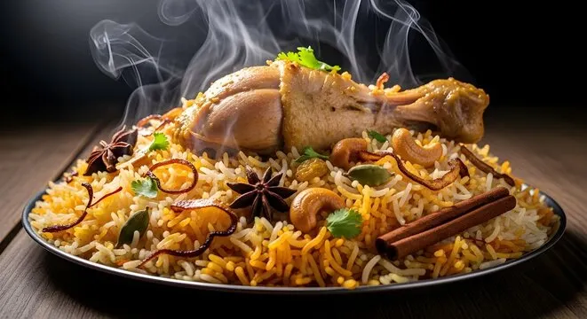
hyderabadi Biryani
Originating in South India, it uses basmati rice, raw marinated meat (goat, chicken, or mutton), yogurt, and saffron, cooked via the dum method. It is often served with mirchi ka salan.
Chettinadu Biryani
Known for its intense spice level, this Tamil Nadu style uses a distinct masala and Jeeraka Samba rice, often cooked in a single pot.
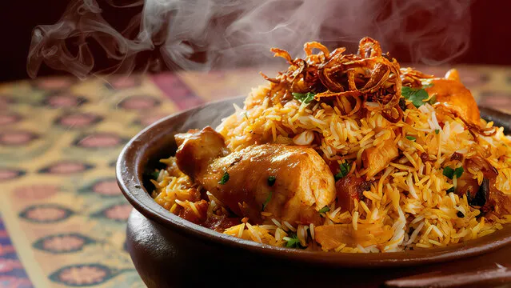
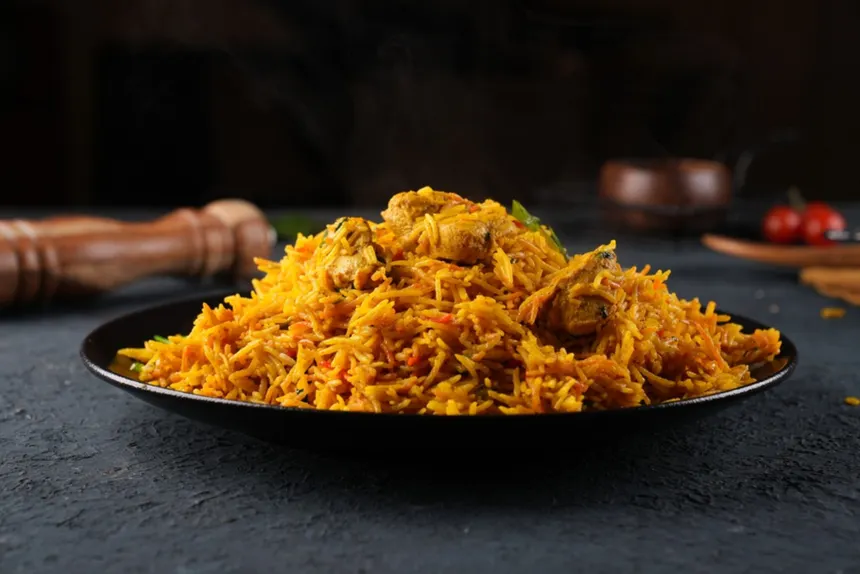
Kolkata Biryani
A lighter variant from West Bengal that uniquely includes potatoes and sometimes boiled eggs, reflecting a milder flavor profile influenced by the royal kitchens of Lucknow.
lakhnowi Biryani
From Northern India, this style is milder and more aromatic, using whole spices and the Pakki technique where meat and rice are cooked separately before layering.
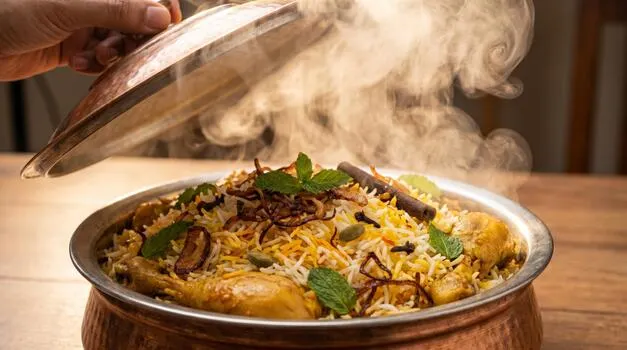
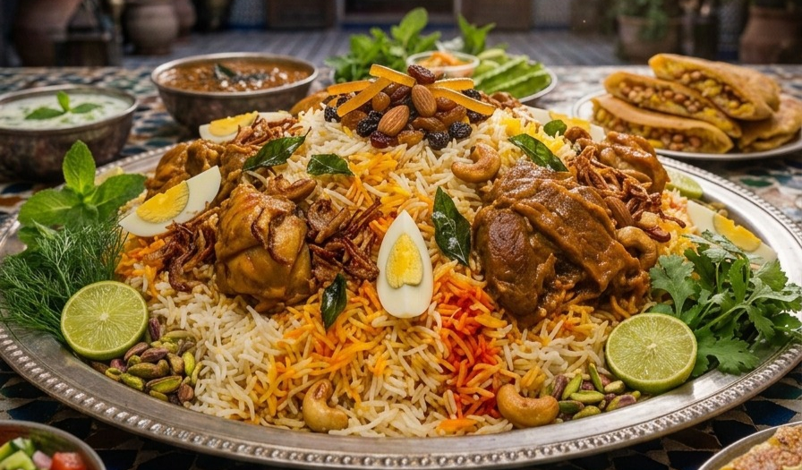
Malasian Biryani
Malaysian Biryani, locally known as Nasi Briyani, is a distinct rice-based dish that reflects the country's multicultural heritage, blending Indian culinary roots with local Malay flavors.
Arabian Biryani
Saudi biryani is a distinct regional variation of the classic South Asian dish, deeply integrated into the Kingdom's culinary culture alongside the national dish, Kabsa (also known as Machboos).
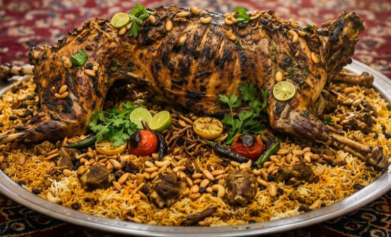
Parotta Madurai Style
There is no single fixed number of parotta types
As variations range from regional preparations to ingredient-specific adaptations. South Indian parottas alone include at least seven distinct types, such as the Malabar parotta, Veechu parotta, Ceylon parotta, Kothu parotta, Coin parotta, Nool parotta, and Poricha parotta.
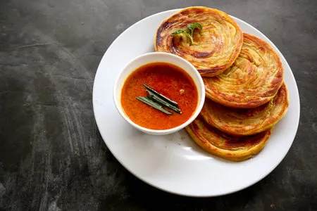
Bun Parotta
Bun Parotta is a thick, soft, and multi-layered flatbread originating from Madurai, Tamil Nadu, characterized by its unique bun-like shape and fluffy texture..
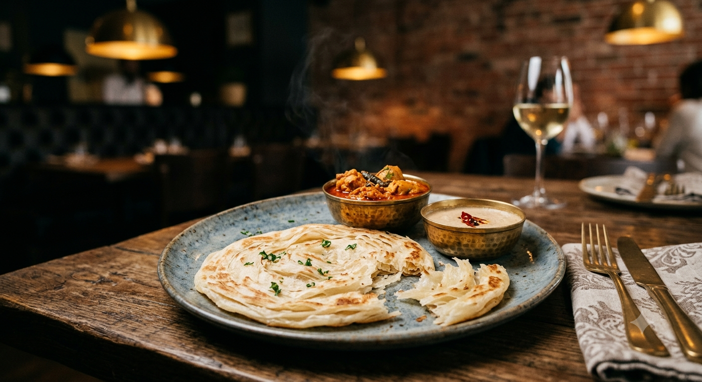
Veechu Parotta
Veechu Parotta is a popular, thin, multi-layered flatbread originating from Tamil Nadu, South India, with roots in Sri Lankan (Ceylon) cuisine

Kothu Parotta
Kothu Parotta is a popular South Indian street food, particularly associated with Tamil Nadu and Sri Lanka, consisting of shredded flaky flatbread (parotta) tossed with a spicy masala, vegetables, eggs, or meat

Poricha(Fried)Parotta
Unlike standard parottas that are pan-fried, poricha parotta is deep-fried after being cooked on a griddle, resulting in a distinctively crispy, golden-brown exterior while maintaining a soft, flaky interior.

Nool Parotta
Nool Parotta, also known as String Parotta or Thread Parotta, is a traditional South Indian flatbread, particularly popular in Kerala and Tamil Nadu.

Coin Parotta
Coin Parotta, also known as Coin Paratha or Small Porotta, is a popular South Indian street food consisting of bite-sized, layered flatbreads made primarily from all-purpose flour (maida).
Veg Rice
Veg Rices for vegitarians Veg Biryani,Veg kushka,Veg Pulav,White Rice,Curd Rice
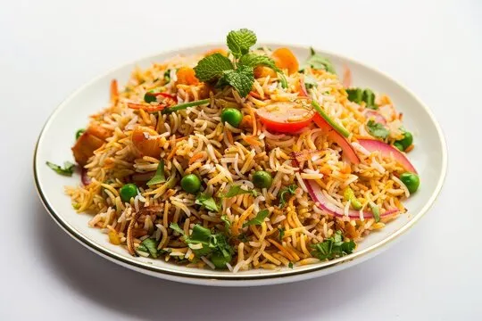
Veg Biryani
Popular variations include Hyderabadi veg dum biryani, which is rich and flavorful, and one-pot or pressure cooker versions for quicker weeknight meals. It is commonly served with raita (yogurt sauce) or chutney to balance the spices.
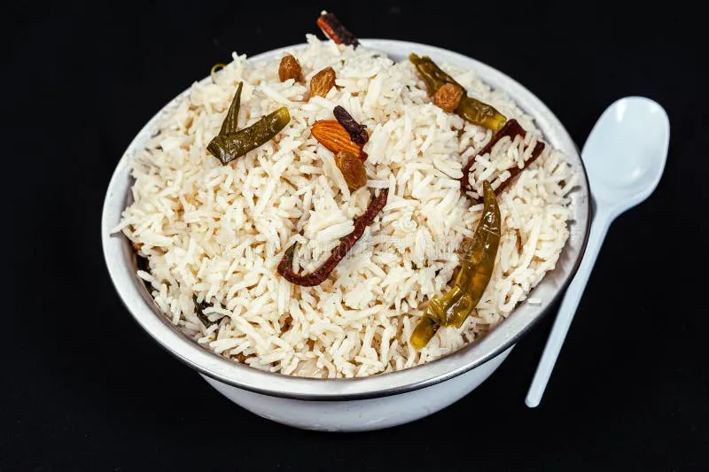
Veg White Kushka
Plain Biryani, is a South Indian rice dish prepared with basmati or seeraga samba rice cooked with whole spices, herbs, and ghee, but without meat or vegetables.
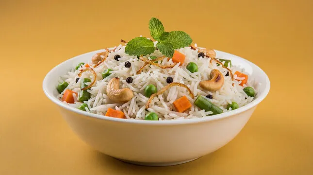
Veg Pulao
The dish is characterized by its mild spicing and lighter profile compared to biryani, making it a popular choice for everyday meals as well as festive occasions. Common varieties include Vegetable Pulao

White Rice
This process results in a softer texture, milder flavor, and significantly longer shelf life, but it also strips away most of the fiber, vitamins, and minerals found in whole-grain brown rice.
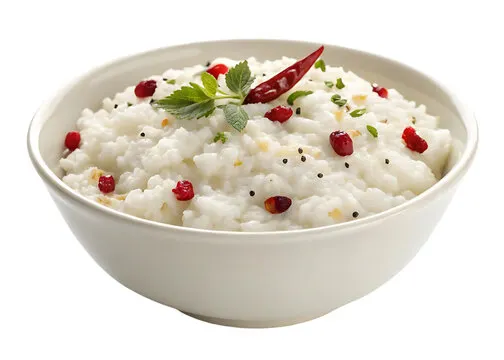
Curd Rice
It is a staple comfort food in states like Tamil Nadu, Karnataka, Kerala, and Andhra Pradesh, often served as a cooling summer dish, at the end of a meal, or as a temple offering (prasadam).

Fried items
Fried food is a broad culinary category defined by cooking items in hot fats or oils, primarily through deep frying (submerging food in hot oil at 350–375°F) or shallow frying (cooking in a thin layer of oil).
Fried Menu